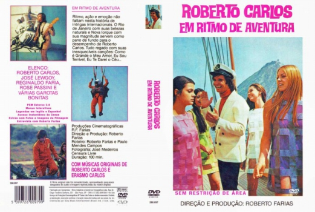

Roberto Carlos em Ritmo de Aventura (1968)


Avaliação (TMDb):


4.1/10 (9 votos)
Avaliação (Usuário):
País:Brazil, 97 minutos
Idiomas falados:Português
Gênero(s):Aventura, Música
Diretor(s):Roberto Farias
Codec:MPEG-2 (DVD)
Número: 4841
Sinopse:
Roberto Carlos faz um filme, quando se vê perseguido por bandidos internacionais que queriam levá-lo para os Estados Unidos.
Os bandidos o seguem em loucas correrias pela cidade, na estrada do Corcovado, em situações de perigo.
Elenco:
Roberto Carlos, José Lewgoy, Reginaldo Faria, David Cardoso, Rose Passini, Jorge de Oliveira, Wanderléa, Márcia Gonçalves, Ana Levy, Elizabeth Pereira
Tipo de mídia: DVD R/RW,
Legendas: Inglês, Espanhol, Sem Legendas
Alugado: Não
Tela: Unknown